My work at ServiceNow
- Role
- Senior UX Researcher, SecOps
- Duration
- 2 years at ServiceNow, after 4+ years in UX design and research
- Methods
- Focus groups, workshops, usability testing, interviews
Five teams, five confirmed actions. How I built an AI-native research workflow, and the decisions it helped other teams make.
Impact at a glance
| Team | Action taken |
|---|---|
| Inbound PM | Added a dedicated migration tool and 3 other roadmap items. 4 of 4 insights picked up. |
| Product Content | Centralizing the fragmented resource hub I flagged. |
| Outbound PM | Built a new tier-awareness messaging strategy. |
| Strategic PM | Greenlit a net-new AI-assisted implementation agent. |
| Design | Confirmed an interaction fix for a task with 39.8% success. |
Shaping the roadmap with PMs

For USEM, I ran 14 focus groups and a 3-day workshop with 15 enterprise customers, testing a static prototype before launch. I split the feedback into two buckets: what validated the existing roadmap, and what was genuinely new.
Customers in several sessions raised the same worry: losing existing rules, findings and remediation mappings during migration.
I read that as one adoption-blocking risk, not scattered noise, and flagged it that way. The Inbound PM team added a dedicated migration tool to the roadmap.
It wasn't a one-off. Three more net-new insights followed, and all four reached the roadmap:
- Flexible service mapping, because CMDB maturity varies across customers
- Instance-level integration status visibility
- A notification system for critical risk changes
From scattered signal to a roadmap

- I planned, facilitated and synthesized the SecOps Partner Roundtable myself: 18 implementation partners across 10 firms.
- For the Implementation Research study, I prioritized every recommendation by effort and impact against pain-point severity, then assigned each to the team responsible.
- The recommendations were not binding, but they largely held. Product Content is centralizing the resource hub, Outbound PM built messaging from the research, and Strategic PM greenlit an AI-assisted agent.
Reframing before recommending

- Before this work the language was generic: "integration challenges", "integration problems".
- I coined "integration tax" to name what was happening: hidden technical debt that partners were absorbing. I paired it with a second framing: complexity is being hidden instead of managed.
- The term stuck. Several teams now use "integration tax" without me in the room.
Catching a breakage pre-launch

- I designed the USEM focus group study myself and ran a UXQ usability study, the company-standard method.
- Task 3, "Handle Blocked Remediation", succeeded for only 39.8% of participants, the lowest of 6 tasks.
- I traced it to one mislabeled action. "Start an investigation" gave no clue that it was the entry point for blocked remediation.
- I recommended renaming it to "Unblock". The Design team confirmed they will implement it.
Where AI can safely act
- My most recent study: one-on-one interviews with 6 Tier-2 SOC analysts about how they use AI in their own investigations today.
- The finding was sharper than "analysts don't trust AI yet": you can't optimize for speed and for evidence-gated trust on the same alert. The right trade-off depends on the incident type.
- I turned it into a stage-by-stage journey map (Automate now, Evidence chain required, Human only) that the team can act on directly.
What I want next
Senior UX Designer roles, hybrid design and research roles, or roles where AI-native process design is part of the job: turning ambiguous, cross-functional signal into a decision people act on.
This page shows how I think. My design case studies show how I build.